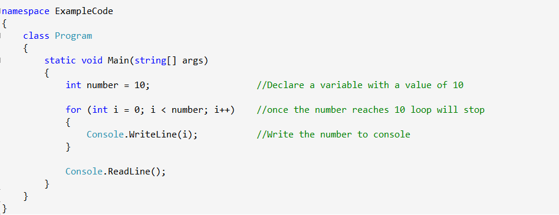
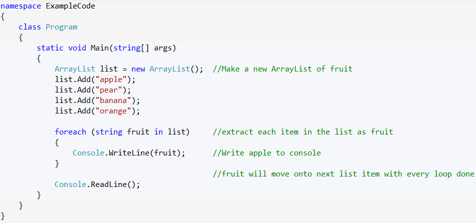
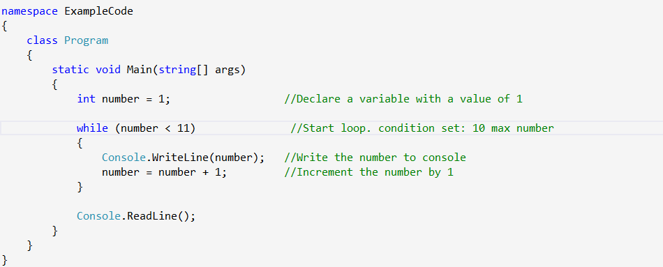
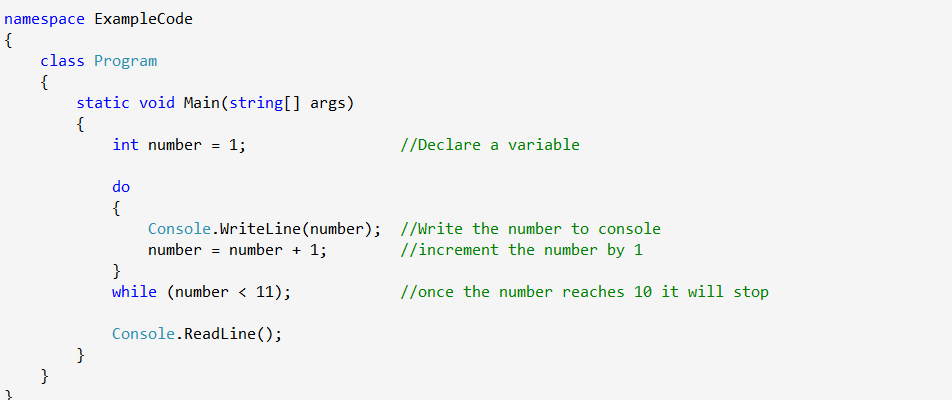

Loops are control structures that allow a block of code to be executed mulitple times. In programming we often require some code to be executed repeatedly and there are different ways to achieve this with different loops. There are 4 different loops to chose from depending on what the parameters and needs for the code are. Below are examples of those 4 loops and a brief description.
You would use a for loop when you know how many iterations you want. You start the iterations at a point, give it a condition to meet and then set how you would like the iterations to be incremented. The code below produces a list of numbers: 0 to 9 using a variable to store the number of iterations.
We use the foreach for operations with collections of items. for example ArrayLists. A variable is declared, which contains the first item in the collection and then you move through all the items (depending on your code) until you reach the end of the collection. The code below will write the fruit names to console.
The while loop executes a block of code as long as the condition given to it is true. Once it becomes false like i = 10 and thus < 11 (it's not allowed to = 11) the condition becomes false and the block of code is no longer executed. The code below will produce a list of numbers: 1 to 10.
The do loop executes a block of code first and then checks the condition set. That way the code block will always be executed at least once. The code below will produce a list of numbers: 1 to 10.
And those are the 4 different loops.